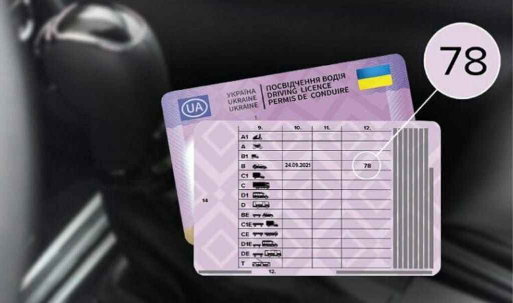

Відмітка "78" у посвідченні водія: що вона означає та які обмеження накладає?
З 2021 року українські водії, які складали практичний іспит на автомобілі з автоматичною коробкою передач (АКПП), отримують у своє посвідчення водія спеціальну відмітку. Ця відмітка має код "78" і накладає конкретні обмеження на право керування транспортними засобами.
Розберемося, що саме означає код "78" та які наслідки настають у разі порушення цього обмеження.
auto ins, автоинс, аутоинс, ауто инс, autoins, автоинс, авто инс, автоінс, авто інс, ауто інс,
Що Визначає Відмітка "78" у Посвідченні?
Відмітка у формі коду "78" зазначається у графі "12" посвідчення водія. Ця вимога передбачена пунктом 17 Положення про порядок видачі посвідчень водія (Постанова КМУ №340).
Головне правило: Посвідчення водія з відміткою "78" надає особі право керувати ЛИШЕ транспортними засобами з автоматичною коробкою передач.
Це означає, що водій пройшов навчання та успішно склав іспит виключно на автомобілі з АКПП і не має необхідних навичок керування "механікою".
Як отримати право керувати "Механікою"?
Якщо ви отримали посвідчення з кодом "78", але бажаєте керувати автомобілем із механічною коробкою передач (МКПП), вам необхідно зняти це обмеження.
Потрібні кроки:
-
Пройти додаткове навчання в акредитованій автошколі.
-
Скласти практичний іспит у сервісному центрі МВС (Сервісному центрі Міністерства внутрішніх справ) — вже на автомобілі з МКПП.
Після успішного складання іспиту ви отримаєте нове посвідчення водія без відмітки "78", що дозволить вам керувати будь-яким типом коробки передач.
Відповідальність за Порушення Обмеження
Керування автомобілем із механічною КПП, маючи у посвідченні лише дозвіл на "автомат" (код "78"), вважається порушенням. Це прирівнюється до керування транспортним засобом без відповідного права.
За таке правопорушення передбачена адміністративна відповідальність згідно з ч. 2 ст. 126 КУпАП (Кодексу України про адміністративні правопорушення):
"Керування транспортним засобом особою, яка не має права керування таким транспортним засобом... — тягне за собою накладення штрафу в розмірі 3400 грн."
Важливо пам'ятати, що така практика кодування обмежень (код "78" для автоматичної трансмісії) використовується і в країнах Європейського Союзу та відповідає міжнародним стандартам.
Керуйте відповідально та завжди дотримуйтесь обмежень, зазначених у вашому посвідченні водія!